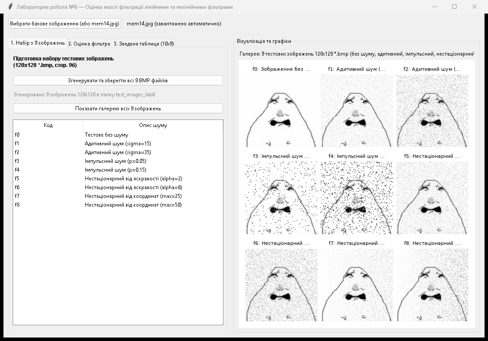
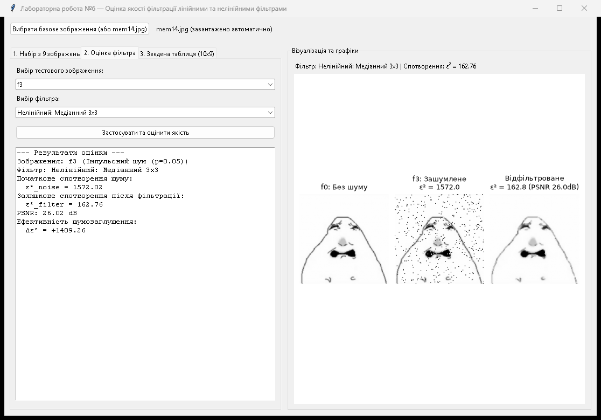
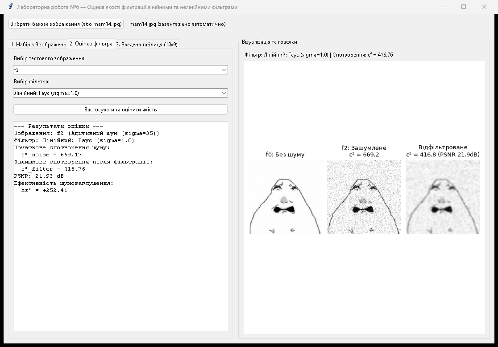
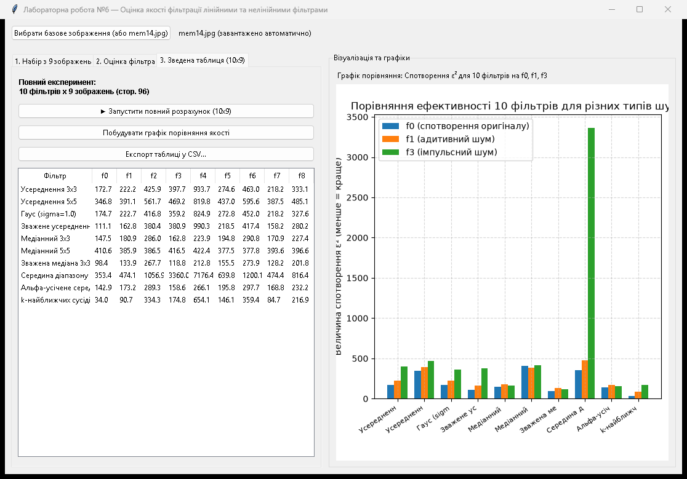

ЗВІТ
з лабораторної роботи з дисципліни
«Комп'ютерна графіка та візуалізація»
Тема: дослідження якості фільтрації цифрових зображень лінійними та нелінійними фільтрами.
1. Лист завдання
Тема: дослідження якості фільтрації цифрових зображень лінійними та нелінійними фільтрами.
Мета: порівняти ефективність лінійних (усереднювальні, зважені, гаусові) та нелінійних (медіанні, рангові середини діапазону, альфа-усіченого середнього, k-найближчих сусідів) просторових фільтрів для придушення різних типів шумів (адитивного нормального, імпульсного, просторово-нестаціонарного), провести оцінку спотворення за критерієм середньоквадратичної похибки на вибірці з 9 тестових зображень та скласти зведену матрицю 10х9.
Перелік завдань:
- Згенерувати набір з 9 тестових зображень розміром 128х128 формату BMP: одне еталонне без шуму (f0), два з адитивним шумом різної дисперсії (f1, f2), два з імпульсним шумом різної щільності (f3, f4), два з просторово-нестаціонарним адитивним шумом від яскравості (f5, f6) та два з просторово-нестаціонарним шумом від координат (f7, f8).
- Реалізувати 3 лінійні просторові фільтри (осереднювальний 3х3, 5х5, гаусовий, зважений) та 7 нелінійних просторових фільтрів (медіанні 3х3 та 5х5, зважений медіанний, середини діапазону, альфа-усіченого середнього, k-найближчих сусідів).
- Реалізувати математичний розрахунок середньоквадратичного відхилення (спотворення) відновленого зображення від еталона за формулою ε² = (1 / (N * M)) * ∑ |g(i, j) - f0(i, j)|² та обчислення відношення сигнал/шум (PSNR).
- Розробити графічний інтерфейс користувача з трьома вкладками: генерація та перегляд галереї вибірки, інтерактивна оцінка одного фільтра з графічним порівнянням, та зведена матриця результатів 10х9 з побудовою гістограми спотворень і експортом у CSV.
- Провести повний розрахунок матриці 10х9 та проаналізувати стійкість різних класів фільтрів до шумів.
2. Опис ходу виконання завдань
Хід розробки та функціональні блоки:
- generate_9_test_images — створення стандартизованого набору з 9 тестових зображень 128х128 пікселів з автоматичним збереженням у форматі BMP: чисте зображення (f0), адитивний шум з дисперсією 15 та 35 (f1, f2), імпульсний шум з імовірністю 0.05 та 0.15 (f3, f4), шум зі змінною дисперсією залежно від яскравості (f5, f6) та координат (f7, f8).
- Лінійні фільтри (filter_linear_box3, filter_linear_box5, filter_linear_gaussian, filter_linear_weighted) — просторова згортка масками різного радіуса та вагових конфігурацій.
- Нелінійні фільтри (filter_nonlinear_median3, filter_nonlinear_median5, filter_nonlinear_weighted_median, filter_nonlinear_midpoint, filter_nonlinear_alpha_trimmed, filter_nonlinear_knn) — рангова селекція значень у ковзному вікні, включаючи медіану, півсуму екстремумів, відсікання граничних викидів та усереднення k найближчих сусідів.
- calculate_distortion — розрахунок числової оцінки спотворення ε² як середнього квадрата різниці між кожним пікселем відфільтрованого зображення та еталонного неспотвореного f0.
- AppLab6 — графічний інтерфейс на основі tkinter/ttk, що забезпечує автоматизоване виконання експерименту 10х9, заповнення інтерактивної таблиці результатів, побудову графіків порівняння через Matplotlib та експорт даних у CSV файл.
Використані бібліотеки та модулі:
- tkinter / ttk — графічний інтерфейс користувача (вкладки Notebook, випадаючі списки Combobox, таблиця Treeview, кнопки запуску).
- filedialog / messagebox — інтерактивний вибір базового зображення, експорт звітної таблиці у CSV та сповіщення.
- numpy — матричні обчислення над пікселями, генерація шумів, розрахунок метрики середньоквадратичного спотворення ε².
- scipy (scipy.ndimage) — швидкі операції згортки convolve, фільтри мінімуму, максимуму та медіани.
- skimage (scikit-image) — завантаження вихідного файлу та збереження набору 9 тестових файлів BMP.
- matplotlib — виведення галереї 3х3, побудова порівняльних візуалізацій та стовпчикових діаграм ефективності фільтрів.
3. Лістинг програми
import os
import tkinter as tk
from tkinter import ttk, filedialog, messagebox
import numpy as np
from scipy.ndimage import convolve, median_filter
from matplotlib import pyplot as plt
from matplotlib.backends.backend_tkagg import FigureCanvasTkAgg
from skimage.io import imread, imsave
from skimage.transform import resize
def generate_9_test_images(source_img: np.ndarray, out_dir: str = "test_images_lab6") -> dict:
os.makedirs(out_dir, exist_ok=True)
if source_img.ndim == 3:
gray = 0.299 * source_img[:, :, 0] + 0.587 * source_img[:, :, 1] + 0.114 * source_img[:, :, 2]
else:
gray = source_img.astype(np.float32)
f0 = resize(gray, (128, 128), preserve_range=True, anti_aliasing=True).astype(np.uint8)
h, w = f0.shape
noise1 = np.random.normal(0, 15.0, (h, w))
f1 = np.clip(f0.astype(np.float32) + noise1, 0, 255).astype(np.uint8)
noise2 = np.random.normal(0, 35.0, (h, w))
f2 = np.clip(f0.astype(np.float32) + noise2, 0, 255).astype(np.uint8)
f3 = f0.copy()
mask3_pepper = np.random.rand(h, w) < 0.025
mask3_salt = np.random.rand(h, w) < 0.025
f3[mask3_pepper] = 0
f3[mask3_salt] = 255
f4 = f0.copy()
mask4_pepper = np.random.rand(h, w) < 0.075
mask4_salt = np.random.rand(h, w) < 0.075
f4[mask4_pepper] = 0
f4[mask4_salt] = 255
sigma_I1 = np.sqrt(2.0 * np.maximum(0.0, f0.astype(np.float32)))
f5 = np.clip(f0.astype(np.float32) + np.random.normal(0, 1.0, (h, w)) * sigma_I1, 0, 255).astype(np.uint8)
sigma_I2 = np.sqrt(6.0 * np.maximum(0.0, f0.astype(np.float32)))
f6 = np.clip(f0.astype(np.float32) + np.random.normal(0, 1.0, (h, w)) * sigma_I2, 0, 255).astype(np.uint8)
cols = np.linspace(0, 25.0, w)
sigma_coord1 = np.tile(cols, (h, 1))
f7 = np.clip(f0.astype(np.float32) + np.random.normal(0, 1.0, (h, w)) * sigma_coord1, 0, 255).astype(np.uint8)
cols2 = np.linspace(0, 50.0, w)
sigma_coord2 = np.tile(cols2, (h, 1))
f8 = np.clip(f0.astype(np.float32) + np.random.normal(0, 1.0, (h, w)) * sigma_coord2, 0, 255).astype(np.uint8)
images = {
"f0": (f0, "Зображення без шуму"),
"f1": (f1, "Адитивний шум (sigma=15)"),
"f2": (f2, "Адитивний шум (sigma=35)"),
"f3": (f3, "Імпульсний шум (p=0.05)"),
"f4": (f4, "Імпульсний шум (p=0.15)"),
"f5": (f5, "Нестаціонарний шум f(I) [alpha=2]"),
"f6": (f6, "Нестаціонарний шум f(I) [alpha=6]"),
"f7": (f7, "Нестаціонарний шум f(x,y) [sigma=25]"),
"f8": (f8, "Нестаціонарний шум f(x,y) [sigma=50]")
}
for key, (img, desc) in images.items():
file_path = os.path.join(out_dir, f"{key}.bmp")
imsave(file_path, img)
return images
def filter_linear_box3(img: np.ndarray) -> np.ndarray:
k = np.ones((3, 3), dtype=np.float32) / 9.0
return np.clip(convolve(img.astype(np.float32), k, mode="nearest"), 0, 255).astype(np.uint8)
def filter_linear_box5(img: np.ndarray) -> np.ndarray:
k = np.ones((5, 5), dtype=np.float32) / 25.0
return np.clip(convolve(img.astype(np.float32), k, mode="nearest"), 0, 255).astype(np.uint8)
def filter_linear_gaussian(img: np.ndarray) -> np.ndarray:
x = np.arange(-2, 3)
k1d = np.exp(-0.5 * (x / 1.0)**2)
k1d /= np.sum(k1d)
k2d = np.outer(k1d, k1d)
return np.clip(convolve(img.astype(np.float32), k2d, mode="nearest"), 0, 255).astype(np.uint8)
def filter_linear_weighted(img: np.ndarray) -> np.ndarray:
k = np.array([
[1, 2, 1],
[2, 4, 2],
[1, 2, 1]
], dtype=np.float32) / 16.0
return np.clip(convolve(img.astype(np.float32), k, mode="nearest"), 0, 255).astype(np.uint8)
def filter_nonlinear_median3(img: np.ndarray) -> np.ndarray:
return median_filter(img, size=3)
def filter_nonlinear_median5(img: np.ndarray) -> np.ndarray:
return median_filter(img, size=5)
def filter_nonlinear_weighted_median(img: np.ndarray) -> np.ndarray:
h, w = img.shape
pad = np.pad(img, 1, mode="edge")
out = np.zeros((h, w), dtype=np.uint8)
for y in range(h):
for x in range(w):
win = pad[y:y+3, x:x+3]
sample = [
win[0, 0],
win[0, 1], win[0, 1],
win[0, 2],
win[1, 0], win[1, 0],
win[1, 1], win[1, 1], win[1, 1],
win[1, 2], win[1, 2],
win[2, 0],
win[2, 1], win[2, 1],
win[2, 2]
]
sample.sort()
out[y, x] = sample[len(sample) // 2]
return out
def filter_nonlinear_midpoint(img: np.ndarray) -> np.ndarray:
from scipy.ndimage import minimum_filter, maximum_filter
min_f = minimum_filter(img.astype(np.float32), size=3)
max_f = maximum_filter(img.astype(np.float32), size=3)
mid = 0.5 * (min_f + max_f)
return np.clip(mid, 0, 255).astype(np.uint8)
def filter_nonlinear_alpha_trimmed(img: np.ndarray, alpha: float = 0.2) -> np.ndarray:
h, w = img.shape
pad = np.pad(img, 1, mode="edge")
out = np.zeros((h, w), dtype=np.uint8)
trim = int(round(alpha * 9))
for y in range(h):
for x in range(w):
win = np.sort(pad[y:y+3, x:x+3].ravel())
trimmed = win[trim : 9 - trim] if trim < 4 else win
out[y, x] = int(np.mean(trimmed))
return out
def filter_nonlinear_knn(img: np.ndarray, k: int = 5) -> np.ndarray:
h, w = img.shape
pad = np.pad(img, 1, mode="edge")
out = np.zeros((h, w), dtype=np.uint8)
for y in range(h):
for x in range(w):
center = pad[y+1, x+1]
win = pad[y:y+3, x:x+3].ravel()
diffs = np.abs(win.astype(np.int32) - int(center))
nearest_idx = np.argsort(diffs)[:k]
out[y, x] = int(np.mean(win[nearest_idx]))
return out
FILTERS = [
("Лінійний: Усереднення 3x3", filter_linear_box3),
("Лінійний: Усереднення 5x5", filter_linear_box5),
("Лінійний: Гаус (sigma=1.0)", filter_linear_gaussian),
("Лінійний: Зважене усереднення 3x3", filter_linear_weighted),
("Нелінійний: Медіанний 3x3", filter_nonlinear_median3),
("Нелінійний: Медіанний 5x5", filter_nonlinear_median5),
("Нелінійний: Зважена медіана 3x3", filter_nonlinear_weighted_median),
("Нелінійний: Середина діапазону (Midpoint)", filter_nonlinear_midpoint),
("Нелінійний: Альфа-усічене середнє (Alpha-trimmed)", filter_nonlinear_alpha_trimmed),
("Нелінійний: k-найближчих сусідів (k-NN)", filter_nonlinear_knn),
]
def calculate_distortion(g: np.ndarray, f0: np.ndarray) -> float:
diff = g.astype(np.float64) - f0.astype(np.float64)
return float(np.mean(diff ** 2))
class AppLab6:
def __init__(self, root):
self.root = root
self.root.title("Лабораторна робота №6 — Оцінка якості фільтрації лінійними та нелінійними фільтрами")
self.root.geometry("1100x740")
self.source_image = None
self.test_images = {}
self.f0 = None
self.results_matrix = {}
file_frame = ttk.Frame(root, padding=10)
file_frame.pack(fill=tk.X)
ttk.Button(file_frame, text="Вибрати базове зображення (або mem14.jpg)", command=self.select_file).pack(side=tk.LEFT)
self.lbl_file = ttk.Label(file_frame, text="Файл не вибрано (буде згенеровано за замовчуванням)", padding=(10, 0))
self.lbl_file.pack(side=tk.LEFT, fill=tk.X, expand=True)
main_frame = ttk.Frame(root, padding=10)
main_frame.pack(fill=tk.BOTH, expand=True)
self.notebook = ttk.Notebook(main_frame)
self.notebook.pack(side=tk.LEFT, fill=tk.BOTH, padx=(0, 10), expand=False)
preview_frame = ttk.LabelFrame(main_frame, text="Візуалізація та графіки", padding=10)
preview_frame.pack(side=tk.RIGHT, fill=tk.BOTH, expand=True)
self.lbl_info = ttk.Label(preview_frame, text="")
self.lbl_info.pack(anchor=tk.W, pady=(0, 5))
self.canvas_frame = ttk.Frame(preview_frame)
self.canvas_frame.pack(fill=tk.BOTH, expand=True)
self._init_generate_tab()
self._init_single_filter_tab()
self._init_summary_table_tab()
if os.path.exists("mem14.jpg"):
try:
self.source_image = imread("mem14.jpg")
self.lbl_file.config(text="mem14.jpg (завантажено автоматично)")
self._generate_dataset()
except Exception:
pass
def select_file(self):
path = filedialog.askopenfilename(
filetypes=[("Image files", "*.jpg *.jpeg *.png *.bmp *.tiff *.gif"), ("All files", "*.*")]
)
if path:
try:
self.source_image = imread(path)
self.lbl_file.config(text=path)
self._generate_dataset()
except Exception as e:
messagebox.showerror("Помилка", f"Не вдалося відкрити зображення:\n{e}")
def _generate_dataset(self):
if self.source_image is None:
arr = np.zeros((128, 128), dtype=np.uint8)
for y in range(128):
for x in range(128):
arr[y, x] = int((x + y) / 2)
self.source_image = arr
self.test_images = generate_9_test_images(self.source_image, "test_images_lab6")
self.f0 = self.test_images["f0"][0]
self.lbl_gen_status.config(text=f"Згенеровано 9 зображень 128x128 в папку test_images_lab6")
self._show_gallery()
def _init_generate_tab(self):
tab = ttk.Frame(self.notebook, padding=10)
self.notebook.add(tab, text="1. Набір з 9 зображень")
ttk.Label(tab, text="Підготовка набору тестових зображень\n(128x128 *.bmp, стор. 96)", font=("Arial", 9, "bold")).pack(anchor=tk.W, pady=5)
ttk.Button(tab, text="Згенерувати та зберегти всі 9 BMP файлів", command=self._generate_dataset).pack(fill=tk.X, pady=8)
self.lbl_gen_status = ttk.Label(tab, text="Очікування генерації...", foreground="gray")
self.lbl_gen_status.pack(anchor=tk.W, pady=2)
ttk.Button(tab, text="Показати галерею всіх 9 зображень", command=self._show_gallery).pack(fill=tk.X, pady=8)
self.tree_imgs = ttk.Treeview(tab, columns=("key", "desc"), show="headings", height=9)
self.tree_imgs.heading("key", text="Код")
self.tree_imgs.heading("desc", text="Опис шуму")
self.tree_imgs.column("key", width=40)
self.tree_imgs.column("desc", width=200)
self.tree_imgs.pack(fill=tk.BOTH, expand=True, pady=5)
img_descriptions = [
("f0", "Тестове без шуму"),
("f1", "Адитивний шум (sigma=15)"),
("f2", "Адитивний шум (sigma=35)"),
("f3", "Імпульсний шум (p=0.05)"),
("f4", "Імпульсний шум (p=0.15)"),
("f5", "Нестаціонарний від яскравості (alpha=2)"),
("f6", "Нестаціонарний від яскравості (alpha=6)"),
("f7", "Нестаціонарний від координат (max=25)"),
("f8", "Нестаціонарний від координат (max=50)")
]
for k, d in img_descriptions:
self.tree_imgs.insert("", tk.END, values=(k, d))
def _show_gallery(self):
if not self.test_images: return
for widget in self.canvas_frame.winfo_children():
widget.destroy()
fig, axes = plt.subplots(3, 3, figsize=(6.5, 6))
keys = ["f0", "f1", "f2", "f3", "f4", "f5", "f6", "f7", "f8"]
for idx, k in enumerate(keys):
ax = axes[idx // 3, idx % 3]
img, desc = self.test_images[k]
ax.imshow(img, cmap="gray", vmin=0, vmax=255)
ax.set_title(f"{k}: {desc[:15]}...", fontsize=8)
ax.axis("off")
fig.tight_layout()
canvas = FigureCanvasTkAgg(fig, master=self.canvas_frame)
canvas.draw()
canvas.get_tk_widget().pack(fill=tk.BOTH, expand=True)
plt.close(fig)
self.lbl_info.config(text="Галерея: 9 тестових зображень 128x128 *.bmp (без шуму, адитивний, імпульсний, нестаціонарний)")
def _init_single_filter_tab(self):
tab = ttk.Frame(self.notebook, padding=10)
self.notebook.add(tab, text="2. Оцінка фільтра")
ttk.Label(tab, text="Вибір тестового зображення:").pack(anchor=tk.W, pady=2)
self.combo_img_select = ttk.Combobox(tab, values=[f"{k}: {self.test_images[k][1]}" if k in self.test_images else k for k in ["f0", "f1", "f2", "f3", "f4", "f5", "f6", "f7", "f8"]], state="readonly")
self.combo_img_select.current(1)
self.combo_img_select.pack(fill=tk.X, pady=4)
ttk.Label(tab, text="Вибір фільтра:").pack(anchor=tk.W, pady=2)
self.combo_filter_select = ttk.Combobox(tab, values=[name for name, _ in FILTERS], state="readonly")
self.combo_filter_select.current(4)
self.combo_filter_select.pack(fill=tk.X, pady=4)
ttk.Button(tab, text="Застосувати та оцінити якість", command=self._run_single_eval).pack(fill=tk.X, pady=10)
self.txt_single_eval = tk.Text(tab, height=12, width=32, wrap=tk.WORD)
self.txt_single_eval.pack(fill=tk.BOTH, expand=True, pady=5)
def _run_single_eval(self):
if not self.test_images:
messagebox.showwarning("Увага", "Спочатку згенеруйте набір тестових зображень!")
return
img_str = self.combo_img_select.get().split(":")[0].strip()
img_key = img_str if img_str in self.test_images else "f1"
current_img, desc = self.test_images[img_key]
f0_clean = self.f0
filter_idx = self.combo_filter_select.current()
fname, func = FILTERS[filter_idx]
filtered = func(current_img)
eps_f0 = calculate_distortion(filtered, f0_clean)
eps_noise = calculate_distortion(current_img, f0_clean)
psnr = 10 * np.log10((255.0**2) / max(1e-5, eps_f0))
for widget in self.canvas_frame.winfo_children():
widget.destroy()
fig, (ax1, ax2, ax3) = plt.subplots(1, 3, figsize=(8, 3.5))
ax1.imshow(f0_clean, cmap="gray", vmin=0, vmax=255)
ax1.set_title("f0: Без шуму", fontsize=9)
ax1.axis("off")
ax2.imshow(current_img, cmap="gray", vmin=0, vmax=255)
ax2.set_title(f"{img_key}: Зашумлене\nε² = {eps_noise:.1f}", fontsize=9)
ax2.axis("off")
ax3.imshow(filtered, cmap="gray", vmin=0, vmax=255)
ax3.set_title(f"Відфільтроване\nε² = {eps_f0:.1f} (PSNR {psnr:.1f}dB)", fontsize=9)
ax3.axis("off")
fig.tight_layout()
canvas = FigureCanvasTkAgg(fig, master=self.canvas_frame)
canvas.draw()
canvas.get_tk_widget().pack(fill=tk.BOTH, expand=True)
plt.close(fig)
eval_text = (
f"--- Результати оцінки ---\n"
f"Зображення: {img_key} ({desc})\n"
f"Фільтр: {fname}\n"
f"Початкове спотворення шуму:\n ε²_noise = {eps_noise:.2f}\n"
f"Залишкове спотворення після фільтрації:\n ε²_filter = {eps_f0:.2f}\n"
f"PSNR: {psnr:.2f} dB\n"
f"Ефективність шумозаглушення:\n Δε² = {eps_noise - eps_f0:+.2f}\n"
)
self.txt_single_eval.delete("1.0", tk.END)
self.txt_single_eval.insert(tk.END, eval_text)
self.lbl_info.config(text=f"Фільтр: {fname} | Спотворення: ε² = {eps_f0:.2f}")
def _init_summary_table_tab(self):
tab = ttk.Frame(self.notebook, padding=10)
self.notebook.add(tab, text="3. Зведена таблиця (10x9)")
ttk.Label(tab, text="Повний експеримент:\n10 фільтрів x 9 зображень (стор. 96)", font=("Arial", 9, "bold")).pack(anchor=tk.W, pady=5)
ttk.Button(tab, text="▶ Запустити повний розрахунок (10x9)", command=self._run_full_experiment).pack(fill=tk.X, pady=5)
ttk.Button(tab, text="Побудувати графік порівняння якості", command=self._plot_summary_chart).pack(fill=tk.X, pady=5)
ttk.Button(tab, text="Експорт таблиці у CSV...", command=self._export_summary_csv).pack(fill=tk.X, pady=5)
columns = ["filter"] + [f"f{i}" for i in range(9)]
self.tree_summary = ttk.Treeview(tab, columns=columns, show="headings", height=11)
self.tree_summary.heading("filter", text="Фільтр")
self.tree_summary.column("filter", width=120)
for i in range(9):
self.tree_summary.heading(f"f{i}", text=f"f{i}")
self.tree_summary.column(f"f{i}", width=40)
self.tree_summary.pack(fill=tk.BOTH, expand=True, pady=5)
def _run_full_experiment(self):
if not self.test_images:
self._generate_dataset()
f0 = self.f0
keys = [f"f{i}" for i in range(9)]
for row in self.tree_summary.get_children():
self.tree_summary.delete(row)
self.results_matrix = {}
for f_idx, (fname, ffunc) in enumerate(FILTERS):
row_vals = [fname.split(":")[1].strip() if ":" in fname else fname]
for k in keys:
img_data = self.test_images[k][0]
filtered = ffunc(img_data)
eps = calculate_distortion(filtered, f0)
self.results_matrix[(f_idx, k)] = eps
row_vals.append(f"{eps:.1f}")
self.tree_summary.insert("", tk.END, values=row_vals)
messagebox.showinfo("Успіх", "Повний експеримент завершено! Таблицю спотворень розраховано.")
self._plot_summary_chart()
def _plot_summary_chart(self):
if not self.results_matrix:
self._run_full_experiment()
for widget in self.canvas_frame.winfo_children():
widget.destroy()
fig, ax = plt.subplots(figsize=(7, 4.5))
filter_names = [f[0].split(":")[1].strip()[:10] for f in FILTERS]
x = np.arange(len(filter_names))
width = 0.25
eps_f0 = [self.results_matrix.get((i, "f0"), 0) for i in range(len(FILTERS))]
eps_f1 = [self.results_matrix.get((i, "f1"), 0) for i in range(len(FILTERS))]
eps_f3 = [self.results_matrix.get((i, "f3"), 0) for i in range(len(FILTERS))]
ax.bar(x - width, eps_f0, width, label="f0 (спотворення оригіналу)")
ax.bar(x, eps_f1, width, label="f1 (адитивний шум)")
ax.bar(x + width, eps_f3, width, label="f3 (імпульсний шум)")
ax.set_ylabel("Величина спотворення ε² (менше = краще)")
ax.set_title("Порівняння ефективності 10 фільтрів для різних типів шуму")
ax.set_xticks(x)
ax.set_xticklabels(filter_names, rotation=35, ha="right", fontsize=8)
ax.legend()
ax.grid(True, linestyle="--", alpha=0.5)
fig.tight_layout()
canvas = FigureCanvasTkAgg(fig, master=self.canvas_frame)
canvas.draw()
canvas.get_tk_widget().pack(fill=tk.BOTH, expand=True)
plt.close(fig)
self.lbl_info.config(text="Графік порівняння: Спотворення ε² для 10 фільтрів на f0, f1, f3")
def _export_summary_csv(self):
if not self.results_matrix:
messagebox.showwarning("Увага", "Спочатку запустіть експеримент!")
return
out_path = filedialog.asksaveasfilename(
defaultextension=".csv",
filetypes=[("CSV files", "*.csv"), ("All files", "*.*")]
)
if out_path:
try:
import csv
keys = [f"f{i}" for i in range(9)]
with open(out_path, "w", newline="", encoding="utf-8-sig") as f:
writer = csv.writer(f)
writer.writerow(["Фільтр"] + keys)
for f_idx, (fname, _) in enumerate(FILTERS):
row = [fname] + [f"{self.results_matrix.get((f_idx, k), 0):.2f}" for k in keys]
writer.writerow(row)
messagebox.showinfo("Успіх", f"Результати експортовано у:\n{out_path}")
except Exception as e:
messagebox.showerror("Помилка", f"Не вдалося зберегти CSV:\n{e}")
if __name__ == "__main__":
root = tk.Tk()
app = AppLab6(root)
root.mainloop()4. Результати виконання роботи
Рис. 1. Галерея з 9 згенерованих тестових зображень 128х128 *.bmp (f0 - f8, вкладка «1. Набір з 9 зображень»)

Рис. 2. Оцінка лінійного осереднювального фільтра 3х3 на зображенні f1 з адитивним шумом (вкладка «2. Оцінка фільтра»)
Рис. 3. Оцінка нелінійного медіанного фільтра 3х3 на зображенні f3 з імпульсним шумом (вкладка «2. Оцінка фільтра»)

Рис. 4. Оцінка гаусового фільтра на зображенні f2 з сильним адитивним шумом (вкладка «2. Оцінка фільтра»)

Рис. 5. Зведена таблиця результатів експерименту 10х9 зі значеннями спотворення ε² (вкладка «3. Зведена таблиця (10х9)»)

Рис. 6. Графік порівняння якості фільтрації для різних типів шуму (вкладка «3. Зведена таблиця (10х9)»)

Рис. 7. Результати повного експерименту з розрахованими показниками у вікні програми

5. Висновки
Під час виконання лабораторної роботи було досліджено ефективність 10 просторових фільтрів (лінійних та нелінійних) для придушення різних типів шумів на наборі з 9 тестових зображень 128х128 формату BMP.
У ході експерименту встановлено, що лінійні фільтри (осереднення та Гаус) ефективно пригнічують адитивний шум з нормальним розподілом, проте спричиняють розмиття контурів і є неефективними при імпульсному шумі. Нелінійні рангові фільтри (медіанний, k-NN) продемонстрували найкращі показники придушення імпульсного шуму (зниження ε² майже до рівня оригіналу) зі збереженням меж об'єктів. Програма автоматизує розрахунок показників спотворення ε², побудову діаграм та експорт результатів у CSV.